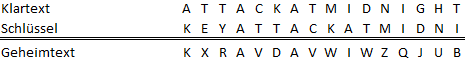
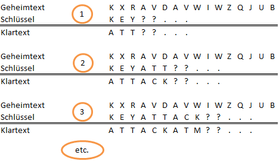

Die Autokey-Vigenère-Verschlüsselung arbeitet wie die Vigenère-Verschlüsselung, hängt jedoch den Klartext an das Schlüsselwort an, anstatt das Schlüsselwort immer wieder zu verwenden (bis auf Klartextlänge) wie bei Vigenère.
Die Autokey-Vigenère-Verschlüsselung gehört, wie die reine Vigenère-Verschlüsselung, zur Familie der polyalphabetischen Substitutionsverfahren.
Der Unterschied zum reinen Vigenère-Verfahren besteht darin, dass der effektive "Schlüssel" sich nicht aus einer endlosen Aneinanderkettung des Schlüsselwortes ergibt, sondern aus dem Schlüssel und dem Klartext selbst.
Das Autokey-Vigenère-Verfahren ist, wie der Name schon verrät, ein spezielles Vigenère-Verfahren, welches sich von der Standardversion dadurch unterscheidet, dass der Schlüssel, also die verschiedenen Verschlüsselungsalphabete, automatisch generiert werden. Hier wird der Klartext selbst zur Verschlüsselung genutzt. Außer der Schlüsselerzeugung gibt es keinen Unterschied zum normalen Vigenère-Algorithmus. Deshalb werden hier nur die Schlüsselerzeugung und zwei Beispiele aufgeführt.
Beim Vigenère-Verfahren werden dieselben Caesar-Alphabete periodisch zur Verschlüsselung genutzt – der Schlüssel wird sozusagen wiederholt an sich selbst angehängt, bis die Klartextlänge erreicht wird. Dann wird jeder Buchstabe aus dem Klartext mit dem Teilschlüssel an der zugehörigen Position im Schlüssel Caesar-verschlüsselt.
Beim Autokey-Vigenère-Verfahren wird der initiale Schlüssel nicht periodisch wiederholt, sondern der Klartext selbst wird an den Schlüssel angehängt – der Text verschlüsselt sich sozusagen mit Verschiebung durch den Schlüssel, selbst. Ein Beispiel: der Text „ATTACKADMIDNIGHT“ soll mit dem Schlüssel „KEY“ Autokey-Vigenère-verschlüsselt werden:

Zu Beginn der Entschlüsselung ist der komplette Schlüssel, so wie er oben als Beispiel unter dem Klartext steht, nicht bekannt, da der Klartext (zu Beginn der Entschlüsselung) ebenfalls nicht bekannt ist. Da jedoch das Schlüsselwort (oben: „KEY“) bekannt ist, lassen sich die ersten Klartextteile schon entschlüsseln. Diese können nun wiederum an den Schlüssel angehängt werden, und damit können die nächsten Klartextteile entschlüsselt werden, bis schließlich der komplette Klartext entschlüsselt ist. Die ersten Schritte der Entschlüsselung des im Beispiel erzeugten Geheimtextes sind nachfolgend abgebildet:

Nachdem der Schlüssel bekannt ist, wird die Entschlüsselung wieder wie beim Vigenère-Verfahren durchgeführt.